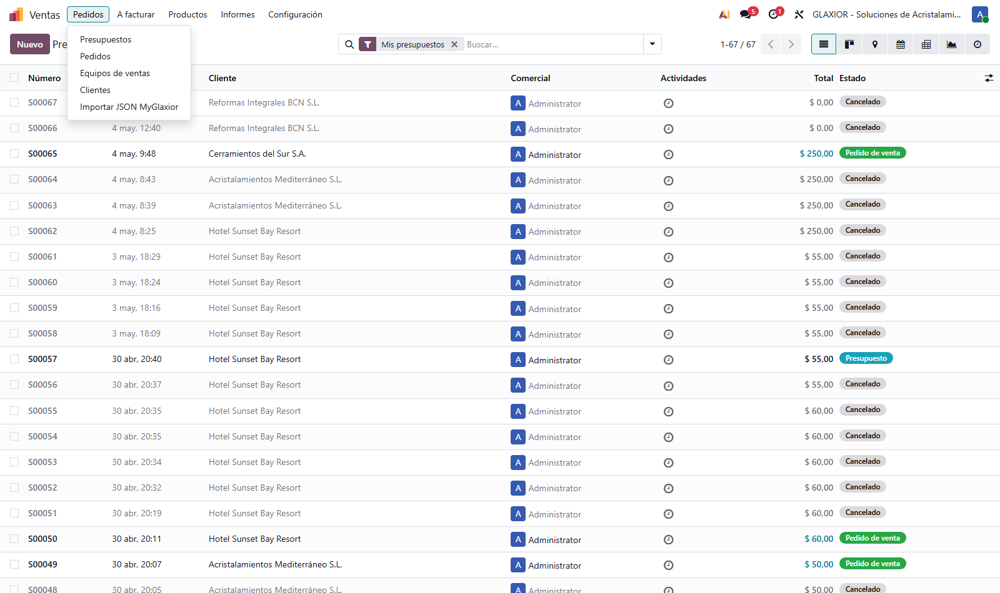
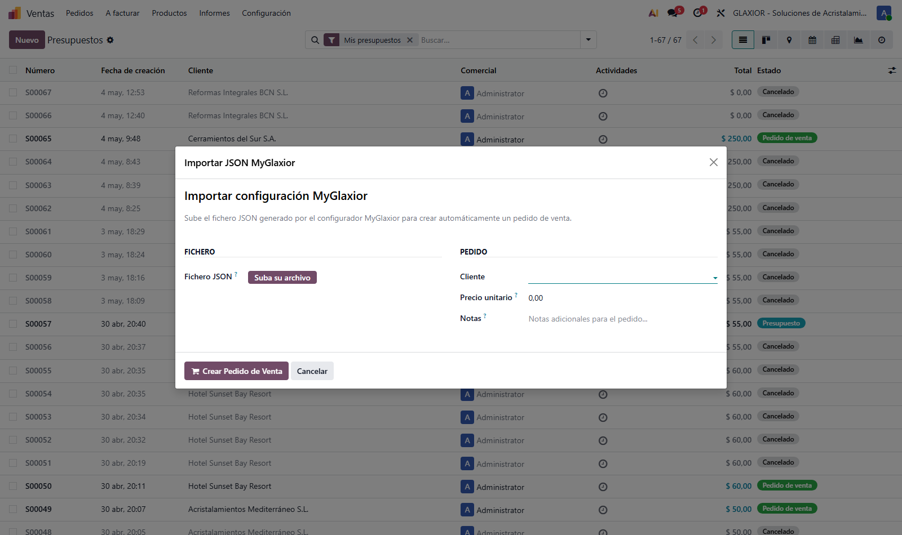
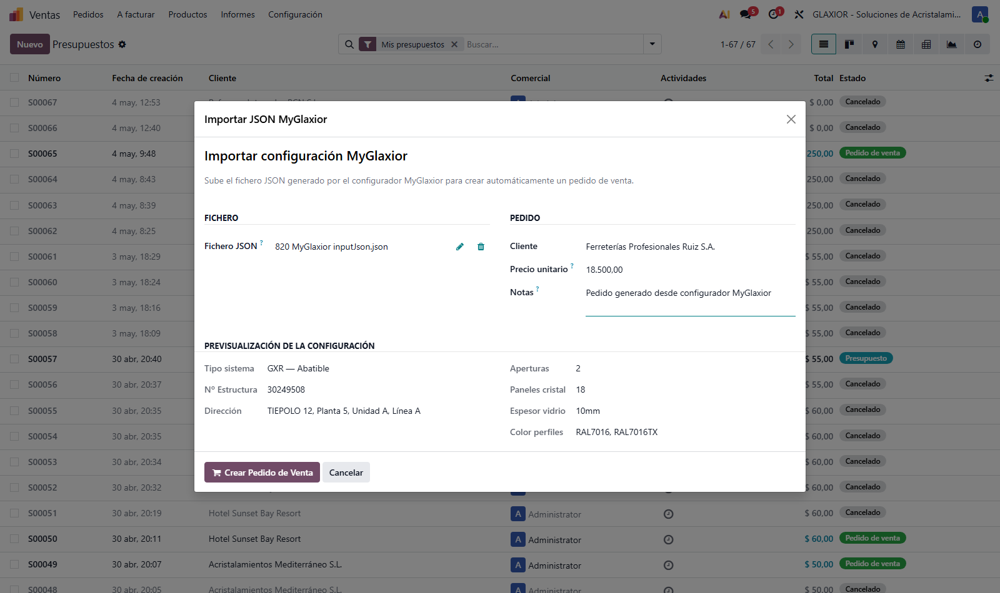
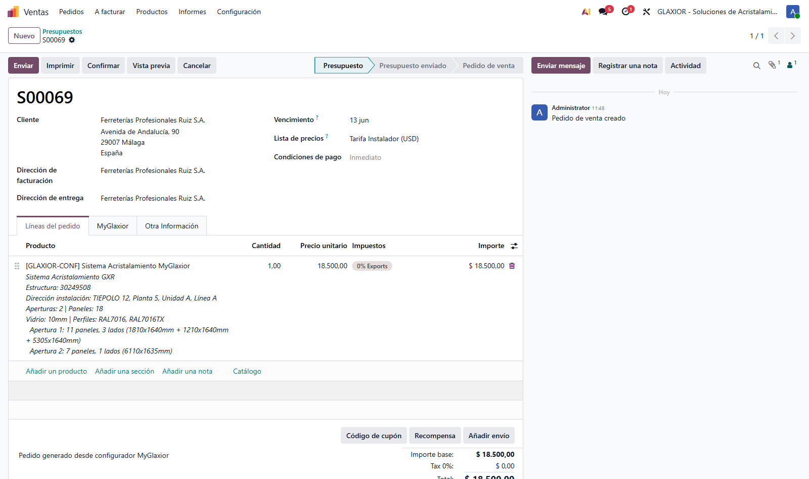
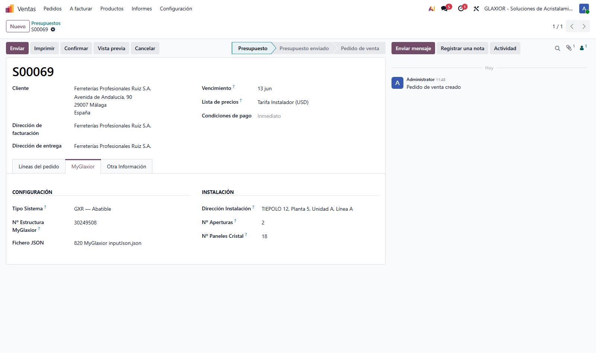
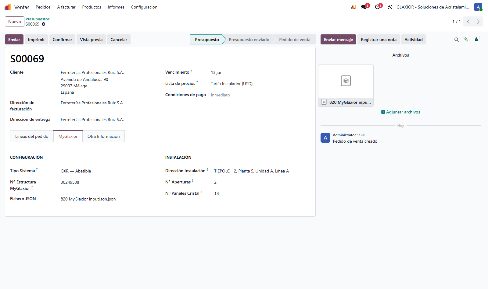

Crea pedidos de venta en Odoo a partir de los ficheros JSON generados por el configurador MyGlaxior, con toda la información de la estructura y el JSON original adjunto al pedido.
En una frase: sube el JSON del configurador, revisa la previsualización, indica cliente y precio, y el sistema crea el pedido de venta con la línea descriptiva, los campos clave y el JSON original adjunto para fábrica.
1. Acceso al asistente
El acceso se encuentra en el menú Ventas → Pedidos → Importar JSON MyGlaxior. Es la última entrada del menú Pedidos.

2. Asistente vacío
Al hacer clic se abre la ventana del asistente. Tiene dos bloques iniciales: Fichero (a la izquierda) y Pedido (a la derecha). La sección Previsualización de la configuración permanece oculta hasta que se cargue un JSON válido.

Campo
Obligatorio
Función
Fichero JSON
Sí
JSON exportado por el configurador MyGlaxior (cabecera GXR o GXS).
Cliente
Sí
Contacto destinatario del pedido. Solo se listan contactos marcados como cliente.
Precio unitario
No
Precio del sistema configurado. Si no se indica, el pedido queda a 0,00 € para ajustar después.
Notas
No
Texto libre que se vuelca al campo de términos y condiciones del pedido.
3. Subir el JSON y revisar la previsualización
Tras subir el fichero JSON, el asistente lo analiza automáticamente y muestra la sección Previsualización de la configuración. Permite verificar el contenido del JSON antes de crear el pedido.

Dato previsualizado
Origen en el JSON
Tipo Sistema
Clave raíz del JSON: GXR (abatible) o GXS (corredera).
Nº Estructura
structure_number
Dirección
Composición de address + Planta + Unidad + Línea.
Aperturas
product_openings
Paneles cristal
Suma de glass_panel_amount de cada apertura.
Espesor vidrio
Distintos glass_thickness presentes en las aperturas.
Color perfiles
Distintos upper_profile_color y lower_profile_color.
Validación: si el JSON no contiene una clave raíz válida (GXR o GXS), el asistente muestra el error "El JSON no contiene una clave de sistema válida (GXR, GXS, ...)" y no permite continuar.
4. Crear el pedido de venta
Pulsando el botón Crear Pedido de Venta, el asistente:
Crea un nuevo sale.order en estado Presupuesto con el cliente indicado.
Añade una línea con el producto genérico [GLAXIOR-CONF] y una descripción detallada con la configuración (estructura, dirección, aperturas, paneles, vidrio, perfiles, dimensiones por apertura).
Vuelca al pedido los campos custom de la pestaña MyGlaxior: tipo de sistema, nº de estructura, dirección de instalación, nº de aperturas y nº de paneles.
Adjunta el JSON original al pedido (en el panel Archivos del chatter), disponible para fábrica.
Abre el pedido recién creado.

5. Pestaña MyGlaxior
En el formulario del pedido aparece una pestaña MyGlaxior con todos los datos de la configuración. La pestaña solo se muestra si el pedido procede del configurador (campo Nº Estructura MyGlaxior informado).

Bloque
Campos
Configuración
Tipo Sistema (GXR / GXS), Nº Estructura MyGlaxior, Fichero JSON.
El JSON original se conserva como adjunto en el panel Archivos del pedido, lo que permite descargarlo y enviarlo a fábrica con un solo clic.

7. Buenas prácticas
Cliente: el contacto debe existir previamente en Odoo. Si es nuevo, créalo desde Ventas → Clientes antes de importar el JSON.
Precio: hoy se introduce manualmente porque el JSON del configurador no incluye el precio. Cuando MyGlaxior lo incluya, se podrá leer del propio fichero.
Trazabilidad: el JSON original queda siempre adjunto al pedido — fuente única de verdad si la fábrica necesita reconstruir la configuración.
Cambios manuales: los campos de la pestaña MyGlaxior son informativos. Modificarlos no regenera el JSON ni la descripción del pedido.
Soporte: ante cualquier incidencia con el módulo, contactar con Process Control. Versión actual del módulo: 19.0.1.0.0.